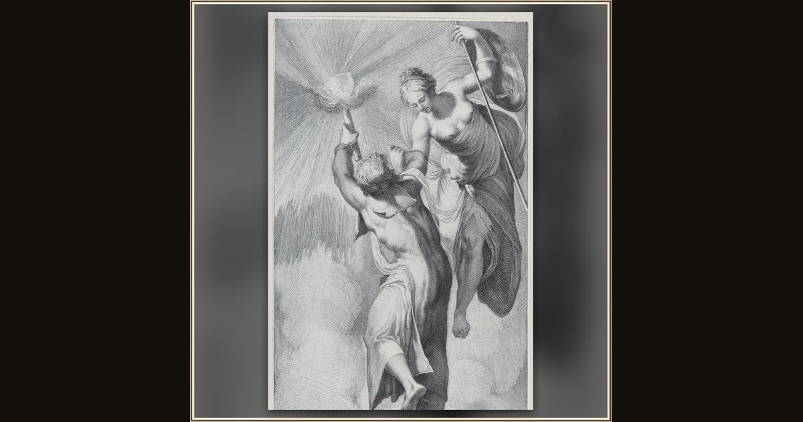

Minerva assisting Prometheus as he attempts to scale the heavens
Bartolomeo Crivellari · 1756 · met
Minerva supports Prometheus as he raises a torch into radiant light; Protagoras' myth next has him take fire and craft for vulnerable humans. (321c) Explore its place in Plato's Dialogues, Protagoras, section 62.